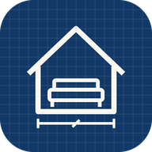

YR FurniTune
Family home layout planner
open
No internet right now. FurniTune needs internet to open. It opens again as soon as you are back online.
Opening your app…
Open YR FurniTune
Sign in with your Google account. Only family members on the app's list can open it.
app icon
Add the icon to your iPhone / iPad
- Open this page in Safari.
- Tap Share at the bottom.
- Tap Add to Home Screen, then Add.
Add the icon
- Open this page in Chrome or Edge.
- Menu ⋮ → Install app (or Add to Home screen).